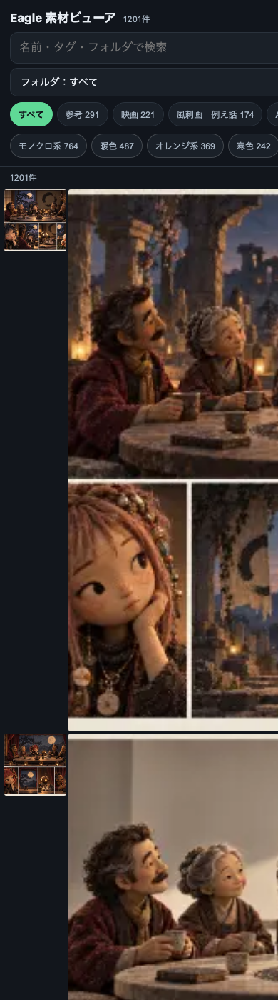

#471 スマホでEagleを見る
2026-09-07 実装・main合流・本番(GitHub Pages)反映まで実測確認
スマホからEagleライブラリの中身を一覧で見られるアプリを1つに絞った。iCloud/Googleドライブに依存する道は条件どおり除外し、既に本番稼働中だったGitHub Pagesの『Eagle素材ビューア』を採用。実機幅(390px)で開き直したところ、1201件を一度に表示するとサムネイルが正方形にならず崩れる不具合を発見・修正した(初期60件+もっと見るボタンに変更)。
② 数字
1201件ライブラリ全体の件数
123フォルダ(棚)の絞り込み数
11色色タグ絞り込みの数
60件崩れずに一度に出せる初期表示件数
③ 前と後（実データでのスクリーンショット）
修正前(1201件同時表示・サムネイルが正方形にならず崩れる)
修正後(本番URLを実機幅で開き直した実物・60件表示で正しく並ぶ)
④ 押せるリンク
⑤ 何をどう確かめたか
| 確認項目 | 結果 |
|---|
| iCloudフォルダ経由 | 除外(たまごさんの希望どおり。繋ぐ問題があったため対象外) |
| Googleドライブの写真アプリ | 除外(希望の条件『iCloud/Googleドライブを対象にしていない』に反するため) |
| Eagle公式のモバイル閲覧機能 | 除外(Eagle自体にモバイル版が無い・デスクトップ専用) |
| GitHub Pagesのギャラリー(採用) | フォルダ絞り込み・タグ絞り込み・サムネイル一覧すべて有り。無料・iCloud/Drive非依存 |
| 1201件を一度に表示した時のグリッド崩れ | 実機幅で発見→初期60件+もっと見るに修正し本番で解消を確認 |